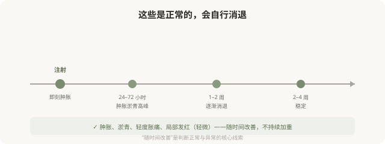
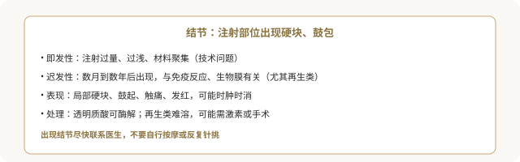
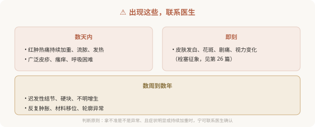

先说结论：注射后多数肿胀、淤青、轻度不适是正常愈合反应，会随时间消退。但结节、过敏反应、感染等并发症需要警惕并及时处理。分清正常反应和异常信号，知道什么情况要立即联系医生，是注射后安全的关键。了解这些，既能避免对正常反应过度焦虑，也能在真正出问题时及时应对。
先理解正常的术后反应

正常反应的特征是随时间改善。注射后即刻肿胀、数小时到两三天的肿胀淤青高峰、之后逐渐消退——这些都是预期内的。
需要警惕的三类并发症
1. 结节（迟发性或即发性）

2. 过敏反应
- 表现：局部或广泛的红肿、瘙痒、皮疹；严重过敏（呼吸困难、喉头水肿、血压下降）虽罕见但需立即急诊。
- 常见来源：透明质酸（罕见）、动物源胶原蛋白（需皮试）、利多卡因等辅料。
- 处理：轻度抗过敏；严重立即急诊。
3. 感染
- 表现：红肿热痛加重、流脓、发热、淋巴结肿大。
- 原因：无菌操作不当、术前皮肤消毒不充分、术后污染。
- 处理：抗感染，严重者可能需要引流或（针对填充）取出材料。
- 预防：正规无菌操作、术后保持清洁、避免污染。
异常信号清单：什么情况要联系医生

术后该做的事
- 保留医生/机构的紧急联系方式。
- 按医嘱护理：避免剧烈运动、高温（桑拿、热敷）、按摩注射区（尤其肉毒后防扩散）。
- 保留术前术后照片和注射记录（产品、批号）。
- 按时复诊，不擅自处理。
- 如实报告症状，不因担心“打扰”而隐瞒。
“等等看”的风险
对于过敏、感染、栓塞这类按时间计算的并发症，“等等看”可能错过处理窗口。判断原则是：拿不准是不是异常、且症状明显或持续加重时，宁可联系医生确认。好的医生会认真对待术后反馈，而不是嫌你“大惊小怪”。
选机构时把“术后应急”算进去
并发症可能在夜间、周末或回家后出现。选择注射机构时，就应确认它有无术后应急联系方式、能不能处理并发症。一家“打完就走、术后找不到人”的机构，在并发症发生时无法提供保障。
本文用于健康教育，不能替代急诊处置；注射后出现异常信号应立即联系医生。